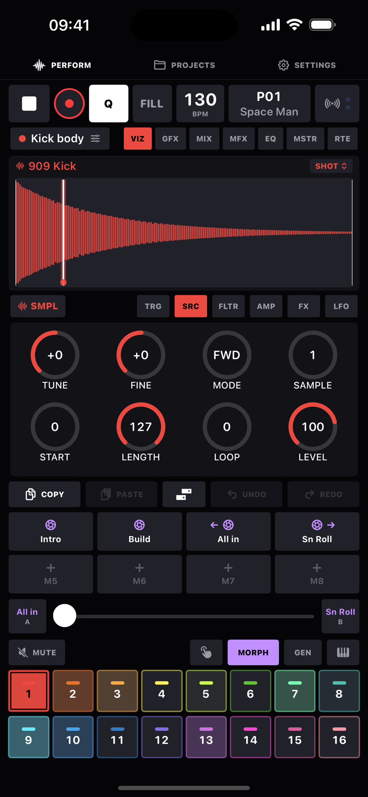

Modulation
Three ways to put parameters in motion: two LFOs per track, recorded automation lanes on any knob, and morphs - whole-board snapshots you can crossfade between.
LFOs
Every track carries two LFOs, edited on the LFO page - each a row of WAVE · RATE · MULT · DEPTH with a live lane in the visualizer above.
| Knob | Options |
|---|---|
| WAVE | SIN, TRI, SAW, SQR, RND. |
| RATE | Period in steps - the full sweep of 1 to 128, no fixed stops - or free-running 0.05–8 Hz when MULT is on its HZ stop. |
| MULT | ×1, ×2, ×4, ×8, ×16, or HZ (untethered from tempo). |
| DEPTH | Bipolar ±64 - negative flips the shape. |
- Trigger modes (chip on the LFO lane): FREE runs continuously; TRIG restarts on every trig; HOLD samples and freezes; ONE plays a single cycle; HALF plays half a cycle.
- Assigning: long-press any knob (or tap its label) to open the modulation drawer - Off / LFO 1 / LFO 2 plus a per-knob depth scale. A knob riding an LFO wears a small wave badge. Up to 8 modulation slots per track.
- The RANDOM lane draws the true sample-and-hold output, so what you see is what it plays.
Recorded automation (CC lanes)
- With REC armed and the transport running, turn any knob - the movement records at full tick resolution and replays with the pattern. A knob carrying a lane wears a curve badge.
- Recording over a lane replaces it: while your new sweep is in flight, everything the playhead crosses is erased - no interleaved mess from layered takes.
- Lanes send economically to hardware (decimated to 1/64-note events with repeats dropped). Clear a track's lanes from its track sheet: Clear Recorded CC Automation.
- On playback the knob follows the lane on screen; at a latched step the knob shows the lane's value at that step, dimmed, to distinguish it from a true p-lock.
Morphs
A morph is a snapshot of the whole board's sound: every internal device's full parameter set, every MIDI track's 24 knob values, both LFOs per track, and the global mute set. Patterns don't change - morphs are how one pattern wears eight different outfits.
- 8 slots per pattern, on the MORPH strip (it replaces the step grid, so the pads stay in reach). Tap an empty pad to save; tap a filled pad to recall; hold to overwrite. Context menu: Rename…, Save Current Here, Set as Morph A / B, Clear.
- The A/B crossfader: pick a morph for each end and ride the fader - parameters interpolate continuously. LFO depth and rate sweep too; discrete choices (shape, mode) switch at the midpoint; mutes snap in when the fader lands on an end.
- Morphs auto-update (Settings, on by default): while a morph is governing the sound, your live edits re-capture into it - turn it off to keep morphs frozen until you explicitly save.
- Song rows can recall a morph as they take over - pattern P03 with morph "chorus lift", then P03 again with "strip it back".
- The morph pads and crossfader are all MIDI-learnable, so a hardware fader can ride the morph live.

Tip
Layer the three: a slow LFO breathing the filter, a recorded lane pumping a
send, and the morph fader pulling the whole kit between two moods - all at
once, all non-destructive.